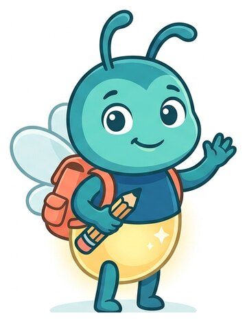

Lumi makes a scribble. You turn it into something… and then into something else, and something else! There are no wrong answers here: the more ideas, and the more different, the better.
Who is playing?
What grade are you in?
The recording stays on this device and is erased when you close the page.